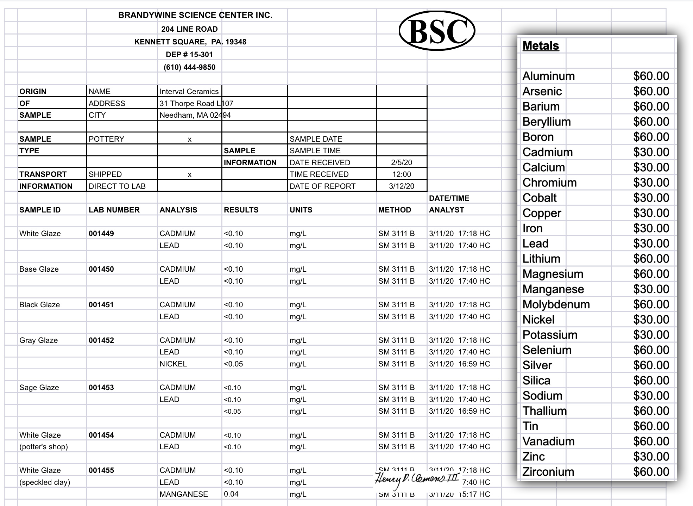

A Low Cost Tester of Glaze Melt Fluidity
A One-speed Lab or Studio Slurry Mixer
A Textbook Cone 6 Matte Glaze With Problems
Adjusting Glaze Expansion by Calculation to Solve Shivering
Alberta Slip, 20 Years of Substitution for Albany Slip
An Overview of Ceramic Stains
Are You in Control of Your Production Process?
Are Your Glazes Food Safe or are They Leachable?
Attack on Glass: Corrosion Attack Mechanisms
Ball Milling Glazes, Bodies, Engobes
Binders for Ceramic Bodies
Bringing Out the Big Guns in Craze Control: MgO (G1215U)
Can We Help You Fix a Specific Problem?
Ceramic Glazes Today
Ceramic Material Nomenclature
Ceramic Tile Clay Body Formulation
Changing Our View of Glazes
Chemistry vs. Matrix Blending to Create Glazes from Native Materials
Concentrate on One Good Glaze
Copper Red Glazes
Crazing and Bacteria: Is There a Hazard?
Crazing in Stoneware Glazes: Treating the Causes, Not the Symptoms
Creating a Non-Glaze Ceramic Slip or Engobe
Creating Your Own Budget Glaze
Crystal Glazes: Understanding the Process and Materials
Deflocculants: A Detailed Overview
Demonstrating Glaze Fit Issues to Students
Diagnosing a Casting Problem at a Sanitaryware Plant
Drying Ceramics Without Cracks
Duplicating Albany Slip
Duplicating AP Green Fireclay
Electric Hobby Kilns: What You Need to Know
Fighting the Glaze Dragon
Firing Clay Test Bars
Firing: What Happens to Ceramic Ware in a Firing Kiln
First You See It Then You Don't: Raku Glaze Stability
Fixing a glaze that does not stay in suspension
Formulating a body using clays native to your area
Formulating a Clear Glaze Compatible with Chrome-Tin Stains
Formulating a Porcelain
Formulating Ash and Native-Material Glazes
G1214M Cone 5-7 20x5 glossy transparent glaze
G1214W Cone 6 transparent glaze
G1214Z Cone 6 matte glaze
G1916M Cone 06-04 transparent glaze
Getting the Glaze Color You Want: Working With Stains
Glaze and Body Pigments and Stains in the Ceramic Tile Industry
Glaze Chemistry Basics - Formula, Analysis, Mole%, Unity
Glaze chemistry using a frit of approximate analysis
Glaze Recipes: Formulate and Make Your Own Instead
Glaze Types, Formulation and Application in the Tile Industry
Having Your Glaze Tested for Toxic Metal Release
High Gloss Glazes
Hire Us for a 3D Printing Project
How a Material Chemical Analysis is Done
How desktop INSIGHT Deals With Unity, LOI and Formula Weight
How to Find and Test Your Own Native Clays
I have always done it this way!
Inkjet Decoration of Ceramic Tiles
Is Your Fired Ware Safe?
Leaching Cone 6 Glaze Case Study
Limit Formulas and Target Formulas
Low Budget Testing of Ceramic Glazes
Make Your Own Ball Mill Stand
Making Glaze Testing Cones
Monoporosa or Single Fired Wall Tiles
Organic Matter in Clays: Detailed Overview
Outdoor Weather Resistant Ceramics
Painting Glazes Rather Than Dipping or Spraying
Particle Size Distribution of Ceramic Powders
Porcelain Tile, Vitrified Tile
Rationalizing Conflicting Opinions About Plasticity
Ravenscrag Slip is Born
Recylcing Scrap Clay
Reducing the Firing Temperature of a Glaze From Cone 10 to 6
Setting up a Clay Testing Program in Your Company or Studio
Simple Physical Testing of Clays
Single Fire Glazing
Soluble Salts in Minerals: Detailed Overview
Some Keys to Dealing With Firing Cracks
Stoneware Casting Body Recipes
Substituting Cornwall Stone
Super-Refined Terra Sigillata
The Chemistry, Physics and Manufacturing of Glaze Frits
The Effect of Glaze Fit on Fired Ware Strength
The Four Levels on Which to View Ceramic Glazes
The Majolica Earthenware Process
The Potter's Prayer
The Right Chemistry for a Cone 6 Magnesia Matte
The Trials of Being the Only Technical Person in the Club
The Whining Stops Here: A Realistic Look at Clay Bodies
Those Unlabelled Bags and Buckets
Tiles and Mosaics for Potters
Toxicity of Firebricks Used in Ovens
Trafficking in Glaze Recipes
Understanding Ceramic Materials
Understanding Ceramic Oxides
Understanding Glaze Slurry Properties
Understanding the Deflocculation Process in Slip Casting
Understanding the Terra Cotta Slip Casting Recipes In North America
Understanding Thermal Expansion in Ceramic Glazes
Unwanted Crystallization in a Cone 6 Glaze
Using Dextrin, Glycerine and CMC Gum together
Volcanic Ash
What Determines a Glaze's Firing Temperature?
What is a Mole, Checking Out the Mole
What is the Glaze Dragon?
Where do I start in understanding glazes?
Why Textbook Glazes Are So Difficult
Working with children
Attack on Glass: Corrosion Attack Mechanisms
Description
Max Richens outlines the various mechanisms by which acids and bases can dissolve glass and glazes. He provides some information on stabilizing glazes against attack.
Article
The corrosion attack mechanisms on glasses and glazes can vary greatly depending on the pH and strength of the attacking medium as well as other factors. Water can be very aggressive especially when it reaches the critical pH of 9 by dissolution of alkalis from the glass surface. Under these conditions even vitreous silica (which will protect from boiling acids) will be attacked. If the surface area in contact is large and the volume is low (as, say, a stack of glass sheets) then this can happen fairly rapidly.
Acid solutions (ignore HF for the moment) attack the fluxes in the glass dissolving them by substituting hydrogen Ions for the alkali ions and opening up the silica skeleton (You get a dull finish where attack has taken place.) The strength of the acid can be crucial. With boiling Sulphuric Acid solutions the attack increases up to 25% and the drops to not a lot at full strength because the acid is no longer ionic therefore fewer hydrogen ions for substitution. When the glass/glaze is high in silica and low in alkali the silica / hydrate film formed will protect the surface from further attack.
Culinary acids such as Citric (orange, lemon,etc) and Acetic (vinegar) can be worse than sulphuric or hydrochloric as they will chelate with the metals present and make them into soluble complexes. That is why comments about orange juice and metal release are important. The calcium, magnesium and aluminium ions which increase the chemical durability of the glass will react and allow a clear path to further attack. Tannic acid (possibly in tea and red wine) acts in a similar manner. Other complexing agents are sucrose (sugar) and alcohol. A small amount of leached copper oxide (10ppm) will sufficiently taint fruit juice to make it unpalatable.
Alkali solutions attack the silica skeleton. Although the attack on the alkali structure doesn't take place; by breaking the silica skeleton down more alkalis are released to join the attack on the glass. Additions such as Zircon can inhibit this attack more effectively than Alumina in alkali silicate glasses. The opacifying effect would, however, be detrimental in a clear glaze.
(Molten NaOH eats glass, as will a 50% boiling solution of NaOH; though at a lower rate. Doesn't touch stainless steel though. This is a well tried process for de-enamelling sheet iron articles which cannot be shot-blasted)
A lot more work could probably be done on comparing slightly different glazes for the changes in chemical resistance and also the effects of under and over firing the glaze. For example take the Lead Bisilicate used as a source for lead. The effect of raw lead oxide on pottery workers led to experiments to make it safer to use. The results showed that the lead-silica ratio of one lead to two silica was the least soluble of the mixes. (ref 2) It was also found that by adding Alumina to the combination the solubility dropped again by a large factor. If, however, borax is used in the lead frit it can increase the solubility of the lead from the frit (ref 3).
This is the traditional reason for having separate borax and lead frit components in preparation of 'Raw' glazes. (ref 4) This is not to say that the final fired glaze will be more soluble because it has borax and lead in it. The balance of the final glaze will determine that. Copper oxide in the glaze will greatly increase the leachability of lead.
Generally speaking using calcium, magnesium, and zinc in the glass formula will increase the chemical resistance over that with sodium and potassium. This is why low fire glazes, which contain more group 1 (periodic table) fluxes and less glass formers, are more susceptible to attack. In these cases lead, barium, zinc etc help improve the chemical resistance.
Special effect finishes can sometimes be more prone to attack than the base glaze. From porcelain enameling experience (bear in mind that enamels are formulated frits that generally fire onto steel at 750-850 degrees Celcius in 4-10 minutes) : a matte finish can be obtained by mixing two dissimilar glasses, one a normal alkali boro-silicate glass with excellent acid resistant properties, the other an alumino-phosphate glass also chemically good. Combined they gave a matte finish with very little acid resistance.
Reading
The book by Bull and Taylor (ref 1) is a good general read on glazes from experienced commercial people. There are references in it which would take you further than this article has on the whole matter of glazes. (ref 5)
There are further works on the structure of glass and glazes by Zachariasen, Warren, Andrews, Mellor etc but you can start getting in quite deep.
Max Richens 1997
+44 (0) 1925 756241 max@richens.demon.co.ukReferences
1 A good general text 'Ceramics Glaze Technology' J R Taylor & A C Bull, Pergamon, ISBN 0-08-033465-2
1 ibid Page180
2 'The use of lead in the manufacture of pottery' T H Thorpe, 1899, UK govt paper 8383-150093/1901 wt 32982 Da S-4
3 Harkort, Sprechsaal 67 621 1934
4 'Ceramic Glazes', Felix Singer & W L Geman. (A Borax Monograph), Borax Consolidated Limited. 1960
5 (No.. I don't have any shares in it ;-) I just think it's an excellent book)
Related Information
Metal leaching from ceramic glazes: Lab report example and a better way

This picture has its own page with more detail, click here to see it.
This lab is certified by the US Department of Environmental Protection (DEP) for drinking water and wastewater analysis. They also provide pottery glaze leaching analyses (an acid solution is kept in contact with the glaze and then analysed for trace levels of specific metals). Each suspected metal to be tested for entails a separate charge ($30-60 in this case, could be less for you). That means that testing one glaze for several metals could cost $200. How to make sense of these numbers? Google the term: "heavy metals drinking water standards", and click "Images" to find charts with lots of data. Searching pages for this term will find books having detailed sections on each of the metals. Typically you are only interested in one metal in a specific glaze (often cobalt or manganese). There are ways to sleep better (about the likelihood your glazes are leaching metals) if you cannot do this: Do a simple GLLE test. And avoid online trafficking in hazardous recipes. Better to find a quality base glaze (matte and transparent) that works well on your clay body. Then add colorants, opacifiers and variegators; but doing so in a conservative manner. And use a liner glaze on food surfaces.
Links
| Articles |
Is Your Fired Ware Safe?
Glazed ware can be a safety hazard to end users because it may leach metals into food and drink, it could harbor bacteria and it could flake of in knife-edged pieces. |
| Articles |
Having Your Glaze Tested for Toxic Metal Release
Having Your Glaze Tested for Metal Release |
| Articles |
Are Your Glazes Food Safe or are They Leachable?
Many potters do not think about leaching, but times are changing. What is the chemistry of stability? There are simple ways to check for leaching, and fix crazing. |
| Articles |
Crazing and Bacteria: Is There a Hazard?
A post to a discussion on the clayart group by Gavin Stairs regarding the food safety of crazed ware. |
| Tests |
Glaze Leaching Test
Simple tests to evaluate the stability of a ceramic or pottery glaze against leaching metals in food or drink. |
| Projects |
Hazards
|
| Glossary |
Leaching
Ceramic glazes can leach heavy metals into food and drink. This subject is not complex, there are many things anyone can do to deal with this issue |
| Glossary |
Toxicity
Common sense can be applied to the safe use of ceramic materials. The obvious dangers are breathing the dust and inhaling the fumes they produce during firing. Here is a round-up of various materials and their obvious hazards. |
 PayPal | No tracking, No ads, No paywall, No transient content! Just organized, concise information constantly updated and improved. Was this helpful? Consider supporting me. |
By Max Richens
Got a Question?
Buy me a coffee and we can talk 

https://digitalfire.com, All Rights Reserved
Privacy Policy